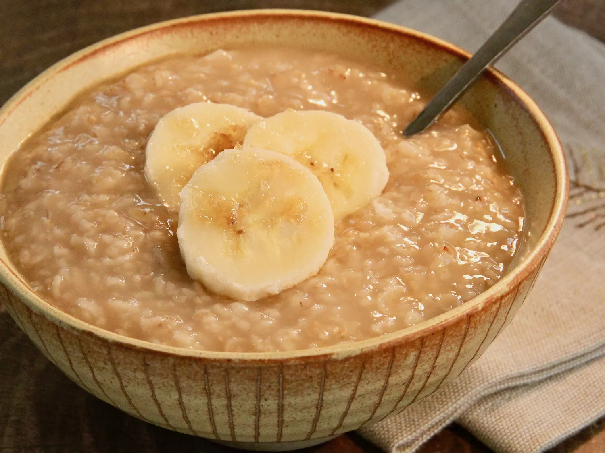

Maple and Brown Sugar Oatmeal

Description
This is an easy to make Oatmeal recipe that should take about 15 min to make!
Ingredients
- Oats
- Maple Syrup
- Brown Sugar
- Milk
Directions
- Bring water to a boil in a small pot
- Add oats and cook, stirring, for 1 minute
- Remove from heat and stir in brown sugar and maple syrup
- Let sit until desired thickness is reached, 2 to 3 minutes